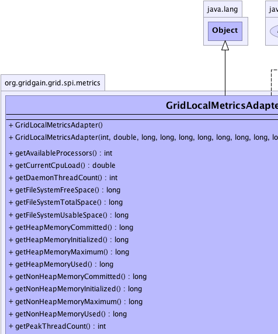
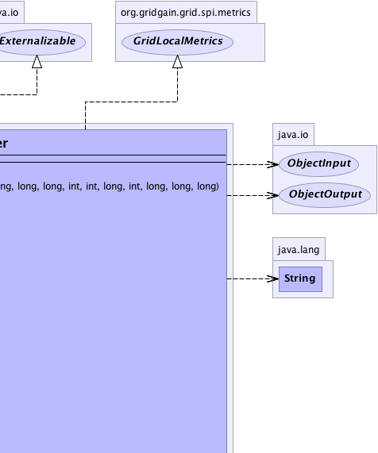
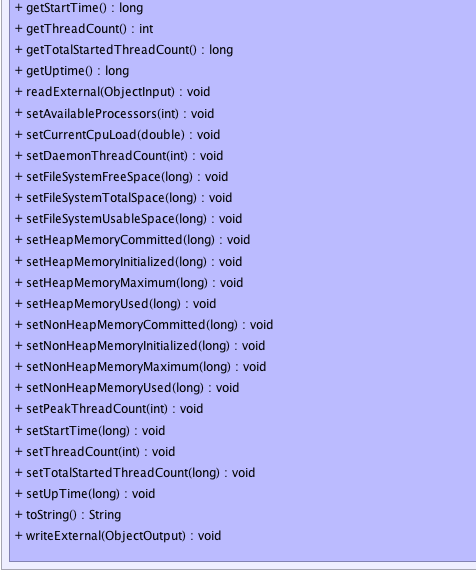

org.gridgain.grid.spi.metrics.GridLocalMetricsAdapter
org.gridgain.grid.spi.metrics.GridLocalMetricsAdapter
|
GridGain™ 3.6.0c
Community Edition |
|||||||||
| PREV CLASS NEXT CLASS | FRAMES NO FRAMES | |||||||||
| SUMMARY: NESTED | FIELD | CONSTR | METHOD | DETAIL: FIELD | CONSTR | METHOD | |||||||||
java.lang.Object
public class GridLocalMetricsAdapter
Adapter for GridLocalMetrics interface.
| Wiki | |
| Forum |
|  |  |
|  |
| Constructor Summary | |
|---|---|
GridLocalMetricsAdapter()
Empty constructor. |
|
GridLocalMetricsAdapter(int availProcs,
double load,
long heapInit,
long heapUsed,
long heapCommitted,
long heapMax,
long nonHeapInit,
long nonHeapUsed,
long nonHeapCommitted,
long nonHeapMax,
long upTime,
long startTime,
int threadCnt,
int peakThreadCnt,
long startedThreadCnt,
int daemonThreadCnt,
long fileSystemFreeSpace,
long fileSystemTotalSpace,
long fileSystemUsableSpace)
Constructor to initialize all possible metrics. |
|
| Method Summary | |
|---|---|
int |
getAvailableProcessors()
Returns the number of processors available to the Java virtual machine. |
double |
getCurrentCpuLoad()
Returns the system load average for the last minute. |
int |
getDaemonThreadCount()
Returns the current number of live daemon threads. |
long |
getFileSystemFreeSpace()
Returns the number of unallocated bytes in the partition. |
long |
getFileSystemTotalSpace()
Returns size of the partition. |
long |
getFileSystemUsableSpace()
Returns the number of bytes available to this virtual machine on the partition. |
long |
getHeapMemoryCommitted()
Returns the amount of heap memory in bytes that is committed for the Java virtual machine to use. |
long |
getHeapMemoryInitialized()
Returns the amount of heap memory in bytes that the Java virtual machine initially requests from the operating system for memory management. |
long |
getHeapMemoryMaximum()
Returns the maximum amount of heap memory in bytes that can be used for memory management. |
long |
getHeapMemoryUsed()
Returns the current heap size that is used for object allocation. |
long |
getNonHeapMemoryCommitted()
Returns the amount of non-heap memory in bytes that is committed for the Java virtual machine to use. |
long |
getNonHeapMemoryInitialized()
Returns the amount of non-heap memory in bytes that the Java virtual machine initially requests from the operating system for memory management. |
long |
getNonHeapMemoryMaximum()
Returns the maximum amount of non-heap memory in bytes that can be used for memory management. |
long |
getNonHeapMemoryUsed()
Returns the current non-heap memory size that is used by Java VM. |
int |
getPeakThreadCount()
Returns the peak live thread count since the Java virtual machine started or peak was reset. |
long |
getStartTime()
Returns the start time of the Java virtual machine in milliseconds. |
int |
getThreadCount()
Returns the current number of live threads including both daemon and non-daemon threads. |
long |
getTotalStartedThreadCount()
Returns the total number of threads created and also started since the Java virtual machine started. |
long |
getUptime()
Returns the uptime of the Java virtual machine in milliseconds. |
void |
readExternal(ObjectInput in)
|
void |
setAvailableProcessors(int availProcs)
Sets available processors. |
void |
setCurrentCpuLoad(double load)
Sets CPU load average over last minute. |
void |
setDaemonThreadCount(int daemonThreadCnt)
Sets daemon thread count. |
void |
setFileSystemFreeSpace(long fileSystemFreeSpace)
Sets the number of unallocated bytes in the partition. |
void |
setFileSystemTotalSpace(long fileSystemTotalSpace)
Sets size of the partition. |
void |
setFileSystemUsableSpace(long fileSystemUsableSpace)
Sets the number of bytes available to this virtual machine on the partition. |
void |
setHeapMemoryCommitted(long heapCommitted)
Sets committed heap memory. |
void |
setHeapMemoryInitialized(long heapInit)
Sets heap initial memory. |
void |
setHeapMemoryMaximum(long heapMax)
Sets maximum possible heap memory. |
void |
setHeapMemoryUsed(long heapUsed)
Sets used heap memory. |
void |
setNonHeapMemoryCommitted(long nonHeapCommitted)
Sets committed non-heap memory. |
void |
setNonHeapMemoryInitialized(long nonHeapInit)
Sets initial non-heap memory. |
void |
setNonHeapMemoryMaximum(long nonHeapMax)
Sets maximum possible non-heap memory. |
void |
setNonHeapMemoryUsed(long nonHeapUsed)
Sets used non-heap memory. |
void |
setPeakThreadCount(int peakThreadCnt)
Sets peak thread count. |
void |
setStartTime(long startTime)
Sets VM start time. |
void |
setThreadCount(int threadCnt)
Sets thread count. |
void |
setTotalStartedThreadCount(long startedThreadCnt)
Sets started thread count. |
void |
setUpTime(long upTime)
Sets VM up time. |
String |
toString()
|
void |
writeExternal(ObjectOutput out)
|
| Methods inherited from class java.lang.Object |
|---|
clone, equals, finalize, getClass, hashCode, notify, notifyAll, wait, wait, wait |
| Constructor Detail |
|---|
public GridLocalMetricsAdapter()
public GridLocalMetricsAdapter(int availProcs,
double load,
long heapInit,
long heapUsed,
long heapCommitted,
long heapMax,
long nonHeapInit,
long nonHeapUsed,
long nonHeapCommitted,
long nonHeapMax,
long upTime,
long startTime,
int threadCnt,
int peakThreadCnt,
long startedThreadCnt,
int daemonThreadCnt,
long fileSystemFreeSpace,
long fileSystemTotalSpace,
long fileSystemUsableSpace)
availProcs - Number of available processors.load - Average system load for the last minute.heapInit - Heap initial memory.heapUsed - Heap used memory.heapCommitted - Heap committed memory.heapMax - Heap maximum memory.nonHeapInit - Non-heap initial memory.nonHeapUsed - Non-heap used memory.nonHeapCommitted - Non-heap committed memory.nonHeapMax - Non-heap maximum memory.upTime - VM uptime.startTime - VM start time.threadCnt - Current active thread count.peakThreadCnt - Peak thread count.startedThreadCnt - Started thread count.daemonThreadCnt - Daemon thread count.fileSystemFreeSpace - Disk free space.fileSystemTotalSpace - Disk total space.fileSystemUsableSpace - Disk usable space.| Method Detail |
|---|
public int getAvailableProcessors()
Runtime.availableProcessors()
method.
This value may change during a particular invocation of the virtual machine.
getAvailableProcessors in interface GridLocalMetricspublic double getCurrentCpuLoad()
If the load average is not available, a negative value is returned.
This method is designed to provide a hint about the system load and may be queried frequently. The load average may be unavailable on some platform where it is expensive to implement this method.
If you are running JDK 1.6 or above and
GridJdkLocalMetricsSpi.setPreferSigar(boolean)
is set to false (default is true), then this method is equivalent to
OperatingSystemMXBean.getSystemLoadAverage() method. Otherwise,
for JDK 1.5 Hyperic Sigar monitoring will be used.
Note that Hyperic Sigar is licensed under GPL. If this license is not
suitable for your business, remove hyperic libs from your classpath. In
case if this method will not detect JDK 1.6 and will not find Hyperic Sigar
libraries in the classpath, -1 will be returned.
getCurrentCpuLoad in interface GridLocalMetricspublic long getHeapMemoryInitialized()
-1 if the initial memory size is undefined.
This value represents a setting of the heap memory for Java VM and is not a sum of all initial heap values for all memory pools.
getHeapMemoryInitialized in interface GridLocalMetrics-1 if undefined.public long getHeapMemoryUsed()
used heap memory values of all heap memory pools.
The amount of used memory in the returned is the amount of memory occupied by both live objects and garbage objects that have not been collected, if any.
getHeapMemoryUsed in interface GridLocalMetricspublic long getHeapMemoryCommitted()
committed heap memory values of all heap memory pools.
getHeapMemoryCommitted in interface GridLocalMetricspublic long getHeapMemoryMaximum()
-1
if the maximum memory size is undefined.
This amount of memory is not guaranteed to be available for memory management if it is greater than the amount of committed memory. The Java virtual machine may fail to allocate memory even if the amount of used memory does not exceed this maximum size.
This value represents a setting of the heap memory for Java VM and is not a sum of all initial heap values for all memory pools.
getHeapMemoryMaximum in interface GridLocalMetrics-1 if undefined.public long getNonHeapMemoryInitialized()
-1 if the initial memory size is undefined.
This value represents a setting of non-heap memory for Java VM and is not a sum of all initial heap values for all memory pools.
getNonHeapMemoryInitialized in interface GridLocalMetrics-1 if undefined.public long getNonHeapMemoryUsed()
used non-heap memory values of all non-heap memory pools.
getNonHeapMemoryUsed in interface GridLocalMetricspublic long getNonHeapMemoryCommitted()
committed non-heap memory values of all non-heap memory pools.
getNonHeapMemoryCommitted in interface GridLocalMetricspublic long getNonHeapMemoryMaximum()
-1
if the maximum memory size is undefined.
This amount of memory is not guaranteed to be available for memory management if it is greater than the amount of committed memory. The Java virtual machine may fail to allocate memory even if the amount of used memory does not exceed this maximum size.
This value represents a setting of the non-heap memory for Java VM and is not a sum of all initial non-heap values for all memory pools.
getNonHeapMemoryMaximum in interface GridLocalMetrics-1 if undefined.public long getUptime()
getUptime in interface GridLocalMetricspublic long getStartTime()
getStartTime in interface GridLocalMetricspublic int getThreadCount()
getThreadCount in interface GridLocalMetricspublic int getPeakThreadCount()
getPeakThreadCount in interface GridLocalMetricspublic long getTotalStartedThreadCount()
getTotalStartedThreadCount in interface GridLocalMetricspublic int getDaemonThreadCount()
getDaemonThreadCount in interface GridLocalMetricspublic long getFileSystemFreeSpace()
getFileSystemFreeSpace in interface GridLocalMetricspublic long getFileSystemTotalSpace()
getFileSystemTotalSpace in interface GridLocalMetricspublic long getFileSystemUsableSpace()
getFileSystemUsableSpace in interface GridLocalMetricspublic void setAvailableProcessors(int availProcs)
availProcs - Available processors.public void setCurrentCpuLoad(double load)
load - CPU load average over last minute.public void setHeapMemoryInitialized(long heapInit)
heapInit - Heap initial memory.public void setHeapMemoryUsed(long heapUsed)
heapUsed - Used heap memory.public void setHeapMemoryCommitted(long heapCommitted)
heapCommitted - Committed heap memory.public void setHeapMemoryMaximum(long heapMax)
heapMax - Maximum possible heap memory.public void setNonHeapMemoryInitialized(long nonHeapInit)
nonHeapInit - Initial non-heap memory.public void setNonHeapMemoryUsed(long nonHeapUsed)
nonHeapUsed - Used non-heap memory.public void setNonHeapMemoryCommitted(long nonHeapCommitted)
nonHeapCommitted - Committed non-heap memory.public void setNonHeapMemoryMaximum(long nonHeapMax)
nonHeapMax - Maximum possible non-heap memory.public void setUpTime(long upTime)
upTime - VN up time.public void setStartTime(long startTime)
startTime - VM start time.public void setThreadCount(int threadCnt)
threadCnt - Thread count.public void setPeakThreadCount(int peakThreadCnt)
peakThreadCnt - Peak thread count.public void setTotalStartedThreadCount(long startedThreadCnt)
startedThreadCnt - Started thread count.public void setDaemonThreadCount(int daemonThreadCnt)
daemonThreadCnt - Daemon thread count.public void setFileSystemFreeSpace(long fileSystemFreeSpace)
fileSystemFreeSpace - The number of unallocated bytes in the partition.public void setFileSystemTotalSpace(long fileSystemTotalSpace)
fileSystemTotalSpace - Size of the partition.public void setFileSystemUsableSpace(long fileSystemUsableSpace)
fileSystemUsableSpace - The number of bytes available to
this virtual machine on the partition.
public void writeExternal(ObjectOutput out)
throws IOException
writeExternal in interface ExternalizableIOException
public void readExternal(ObjectInput in)
throws IOException,
ClassNotFoundException
readExternal in interface ExternalizableIOException
ClassNotFoundExceptionpublic String toString()
toString in class Object
|
GridGain™ 3.6.0c
Community Edition |
|||||||||
| PREV CLASS NEXT CLASS | FRAMES NO FRAMES | |||||||||
| SUMMARY: NESTED | FIELD | CONSTR | METHOD | DETAIL: FIELD | CONSTR | METHOD | |||||||||
|
GridGain - Real Time Big Data
|
|

|
|